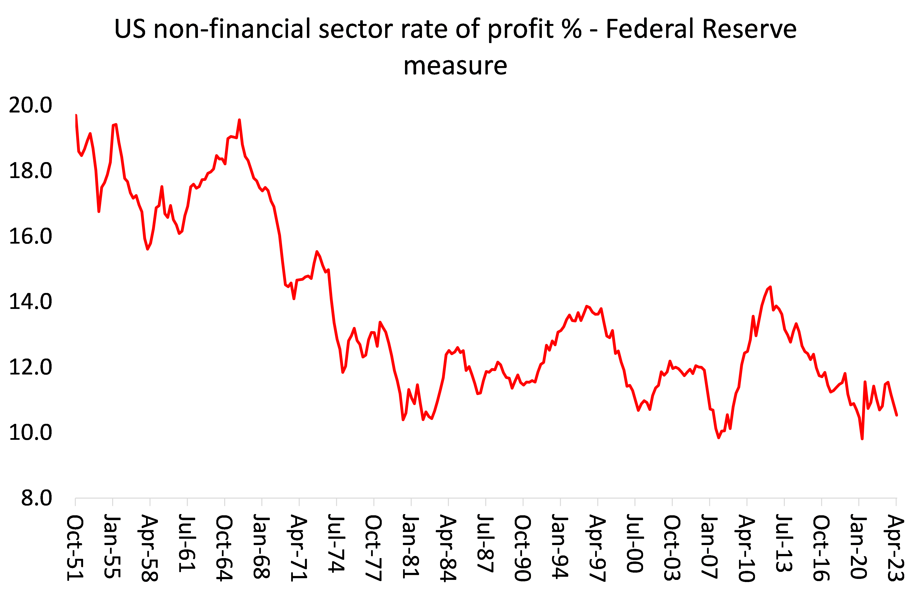
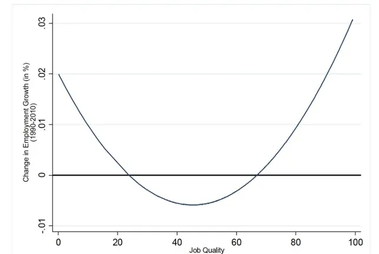
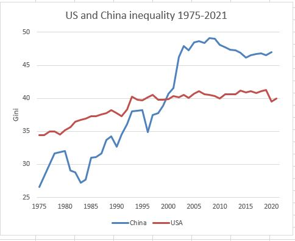

55 USA
Milanovic
55.1 Turchin Model of Decay
Inequality is important because high inequality leads to social conflict. How? Peter Turchin comes with an explanation.
Turchin’s model of decay has one variable: inequality in income or wealth. That variable which is often adduced as a source of political discord is given a very concrete meaning by Turchin.
Rising inequality means by definition that the median-income person will fall further behind the mean-income person, and increasingly behind the top 10% or the top 1 percent. The median-income person could be, as in today’s United States (a county to whose analysis most of the book is dedicated), an insufficiently credentialed manufacturing or service sector worker; or it could be a semi-skilled laborer in the 19th century Great Britain, or a small landholder in the 1830s France and 1850s Russia. Thus, precise occupation or class does not matter: income position does.
Elite Split
Increased inequality means, again by definition, that people at the top are getting richer compared to the rest, or put differently, that the advantage of being in the top decile or top percentile is increasing. This, as every economist knows, implies that the “demand” for such top slots will go up. If the elite (the top decile or the top percentile) is composed, as in today’s US, of executives, investment bankers, corporate lawyers there will be an increasing attempt to study the most lucrative fields and to adopt the type of behavior (including the beliefs) most likely to lead to joining the elite. If more people do so than there are elite positions, a game of empty chairs follows. Not everyone among the aspiring elite will make it. The split in the elite, created by the disappointed would-be elite fighting for top positions, comes next.
Elite Overproduction
In conditions where (a) the distance between the median and the top goes up (what Turchin calls “immiseration” although it is important to note that this is a relative immiseration; i.e., the median-income person can in real terms become better off), and (b) there is elite overproduction, a pre-revolutionary situation ensues.
Enlisting ‘The People’
Immiseration is not enough. To produce a breakdown, we have to have different elites fighting each other, with one of them enlisting the support of the “people” in order to win.
Even passing knowledge of the backgrounds of the most important revolutions in the modern era shows that Turchin’s simple model provides a good fit. Take the French revolution: stagnation of income and recurrent famines occurred simultaneously with a divided elite (aristocracy and part of the clergy against the rising city merchant class); in Russia in 1917, it was one part of aristocracy against another which lost its landholdings and wealth after the abolition of serfdom and could not compensate it with well-paying state jobs. (The statistic of the number of revolutionaries who were themselves, or their families, the impoverished nobles is striking.) Or take the 1979 Iranian revolution: the sidelined clergy against the bourgeois elite, which, like in the Russian case, produced through its offspring the future revolutionaries.
US is a Plutocracy
The model fits well—almost too well—the current American reality. The median person is the “deplorable” (to quote Hillary Clinton), a populist (to quote the mainstream media), a Hillbilly (to quote J. D. Vance) or one of the candidates for the deaths of despair (to quote Anne Case and Angus Deaton). The disaffected, disenchanted American lower middle class has been studied extensively after Trump came to power. The current elite, whom Turchin dissects in an almost forensic manner, is composed of CEOs and board directors, large investors, corporate lawyers, “policy-planning network”, and top elected officials (p. 203), that is, of all those who have money and who use it to gain voice and power. (Not unexpectedly, Turchin argues that the United States is a plutocracy that uses the tools of the general right to vote as a way to legitimize its power).
Elite Fight
But that elite is not monolithic. An aspiring elite (“credential precariat”) has been constituted. It has failed so far to reach the top and has ideologically defined itself in opposition to immigration, globalization, “woke” ideology. Turchin argues that this aspiring or would-be elite is in the process of taking over the Republican party and thus creating a political tool for an effective intra-elite competition. This is, of course, resented by the ruling elite that enjoyed an extraordinary good run between 1980 and 2008 as its view of the world (neoliberal capitalism, “credentialism”, and identity politics) became espoused by both mainstream parties. Turchin regards the present political struggle in the US as the ruling class trying (desperately) to fend off an assault on its ideology and, more importantly, on its economic position, by an aspiring elite that is enlisting the support of the disaffected middle class.
Left Elite against working/middle class
In all Western democracies, the left-wing or social-democratic parties have become parties of the educated credential elites, while the working and middle classes have lost their influence and even representation.
(See also under ‘China’)
55.2 Military
Roberts
Brown University’s Watson Institute for International and Public Affairs published its annual “Costs of War” report last week. This refers only to the costs of war for the US. It takes into consideration the Pentagon’s spending and its Overseas Contingency Operations account, as well as “war-related spending by the Department of State, past and obligated spending for war veterans’ care, interest on the debt incurred to pay for the wars, and the prevention of and response to terrorism by the Department of Homeland Security.” The final count revealed, “The United States has appropriated and is obligated to spend an estimated $5.9 trillion (in current dollars) on the war on terror through Fiscal Year 2019, including direct war and war-related spending and obligations for future spending on post 9/11 war veterans.”
US military is conducting counterterror activities in 76 countries, or about 39 percent of the world’s nations.
Between 480,000 and 507,000 people have been killed in the United States’ post-9/11 wars in Iraq, Afghanistan, and Pakistan.
Roberts (2019) Milex and the rate of profit
Roberts

55.2.1 The Wests Military is weak
Welsh
The US hasn’t fought a serious opponent since WW2. Even then, the US vastly overstates it role and understates the USSR’s role in defeating Germany.
Likewise, the UK had this problem. The UK was not prepared for WW1. It also suffered from that problem in WW2. The reason is because it was focused on imperialist colonial wars. It’s military in early parts of WW1 and WW2 didn’t do so well at first and had to undergo a very steep learning curve.
The US has this problem now as well.
The first problem is that industrial warfare is fundamentally different than guerilla warfare. It means that the US doesn’t have overwhelming industrial strength. US troops and mercenaries that have served in Ukraine didn’t do so well. They aren’t used to fighting in an environment without total US air and artillery supremacy. That’s a huge shock. One fear is what the US will do if the US gets into a war and they take losses of carriers and the like. The main risk, in other words, is that it would go nuclear after the US ruling class panics.
A second problem is doctrine. Early WW1 era fighting was built around fighting a war in the 19th century. If one looks at the tactics that the European powers used in the opening phases of WW1, it was almost like they were fighting the Napoleonic Wars again. They ignored the trends that had developed during the Industrial Revolution, along wars like the US Civil Wars and the Crimean War about the implications. Similarly, the US and NATO doctrine is built around the Gulf War, with a very limited appreciation of what had changed and how it affected war.
The US is in a similar position, having waged wars against Iraq, Afghanistan, Syria, etc. These were mostly Neo-colonial wars meant to enforce US hegemony and steal the natural resources of the nation they were invading. In other words, they were like the wars the British Empire waged.
A third problem is greed. The US military industrial complex is not built around weapons made for best combat effectiveness, but corporate profit maximization of companies like Lockheed Martin. Western governments are all corrupted by the rich, who act through intermediaries like lobbyists to corrupt any pretensions of democracy and accountability.
A fourth problem is declining Western innovation relative to the rest of the world. Russia for example has more advanced electronic warfare and hypersonic missiles, which the West doesn’t have.
This will be an even bigger problem if the US is stupid enough to go to war with China.
As for who has more manufacturing, China has more manufacturing than the US and EU combined. Most of China’s military is closer in structure to Russia’s, with large state owned enterprises that do both military and civilian products.
It’s not just Israel which is weak, it’s all of the Western armed forces.
55.4 Bidenomics
Foroohar
There can be no doubt now that an epochal shift is underway in how the economy—in America and across the globe—is governed. The mystery is how a moderate, conventional politician like Joe Biden engineered it….
The record on that score is unequivocal. His COVID-19 stimulus bailed out people, not banks. His domestic economic policy has been about curbing giant corporations and promoting income growth. His infrastructure bills invested in America in a way not seen since the Eisenhower administration. He has taken commerce back to an earlier era in which it was broadly understood that trade needed to serve domestic interests before those of international markets.
The contrast with the so-called neoliberal economics of recent decades, in which it was presumed that markets always know best, and particularly the Clintonian idea that “free” trade and globalization were inevitable, could not be starker. With a few notable exceptions (Joseph E. Stiglitz, Jared Bernstein), Bill Clinton’s administration, like Barack Obama’s, was filled with neoliberal technocrats who bought fully into the idea of the inherent efficiency of markets. Although they might have occasionally looked to tweak the system, many of the academic economists running policy basically believed that capital, goods, and people would ultimately end up where it was best and most productive for them to be without the sort of public-sector intervention you’ve seen during the Biden administration.
In this world, so long as stock prices were going up and consumer prices were going down, all was well. Monetary policy trumped fiscal stimulus. And if the latter had to be used, it should be, in the words of the economist Larry Summers, “timely, targeted, and temporary.” (The Biden stimulus, by contrast, is designed to be broad based and long term.) In this political economy, outsourcing wasn’t a bad thing. China would get freer as it got richer. Americans should aim to be bankers and software engineers, not manufacturers….
“Rather than speaking to Goldman Sachs, Biden spoke to autoworkers.”
55.5 America’s decline
Farooqi
A more compelling theory pins the blame for the decline of the American working class on the transformation of the US occupational structure that is occurring around the same time as the structural break in despair: when Clinton was throwing parties at the White House to celebrate the New Economy, the US occupational structure was acquiring its present hourglass shape.

Figure: US Job Quality Shift
The hourglass occupational structure may be a consequence of the information technology revolution. The technology enabled routinization of production processes of both goods and services. Both men and machines were automated. Machines were automated with code. Workers were automated through routinization of tasks, thereby increasing the scale of operations that could be brought under the precise control of highly-skilled managers. An unanticipated consequence of this development in technics was the vanishing of middle-skilled occupations and the systematic deskilling of the American labor force. As we argued above, this is the correct etiology of the crisis of the American working-class.
The number of middle-skilled with middling pay have actually declined. Meanwhile, the number of deskilled jobs offering low pay have grown, and highly-skilled jobs for the college-educated have grown especially fast in the New Economy.
What has happened as akin to the Lewisian model in monstrous reverse: instead of leaving a traditional low-productivity sector for a modern high-productivity sector, working-class American breadwinners were pushed out of middle-skilled jobs into either deskilled “dead-end” jobs at the bottom, or a life of dependence and indolence. Labor force participation for women over 20 had risen to 60 percent by 2000, where it has roughly stabilized so that participation rates of all adults are not confounded by gender composition effects from then on. In 2022, the prime-age labor force participation rate was 73 percent for college graduates, 63 percent for those with some college, 56 percent for high-school grads, and 45 percent for high school dropouts. Let that sink in: four out of every nine high-school graduates in their prime working years are no longer even looking for a job. These workers are almost certainly discouraged by the dead-end jobs that are available for high school grads.
Occupational polarization has caused grave insults to the working-class self and to the reproduction of the working-class family. The trauma of deskilling and intergenerational downward mobility resisters in self-harm, labor market capitulation, and family instability. Family formation rates are strongly stratified by educational attainment.
These insults to the working-class self and family reproduction have exacerbated the status conflict inherent in the polarization of society around what’s called the diploma divide. Emmanuel Todd has argued that the universalization of high school education flattened the distribution of capabilities and thereby made possible the egalitarian world that obtained at midcentury. But the spread of college education in the latter half of the twentieth century, because it was invariably limited to an advantaged minority, vertically polarized society along the diploma divide.
Prestige-schooled meritocrats cornered the lion’s share of skill, income, and prestige, leaving crumbs for the provincial elites and working classes of “flyover country.”
I have tried to suggest what I see as the correct etiology of working-class despair and radicalization. Serious people may, of course, challenge my explanation of the crisis of the American working class. What is amply clear is that China is not responsible for this catastrophe. We did this to ourselves.
The problem is endogenous to our civilization. It lies in our arrangements. In order to dig out of this hole, we need an honest reckoning with the underlying problem. Blaming foreigners is the refuge of scoundrels like Donald Trump. It has no place serious debate over high policy.
One of the main findings of what’s called Schumpeterian growth theory is of particular importance to the countries of the advanced industrial core. This is the finding that “openness is particularly growth-enhancing in countries that are closer to the technological frontier.”[36] Conversely, tariff walls and non-tariff trade barriers pose special risks for the most advanced economies. Specifically, the risk posed by protectionism is that it would undermine the competitiveness of the center countries.
If the US embraces economic protectionism, as it is most definitely at risk of doing, not only will the most productive American firms face weaker import competition and therefore weaker incentives to innovate, but factors of production will also remain trapped in the least productive firms, thereby further undermining US productivity growth. And the problem cannot be contained by narrow Sino-American decoupling. If we shelter our firms from Chinese competition but, say, the Koreans don’t, then how will we compete with the Koreans? The same is true of all our allies and trade partners. We cannot escape this dilemma through clever tactics.
If the United States hunkers down behind tariff walls, American firms and industries will in all probability lose the productivity race. Our mistaken narratives blaming free trade for the decline of the American working class may very well cost us the very thing on which the future of America’s world position rests. We are at risk of killing the golden goose.
55.6 Dollar Hegemony
Farooqi
The dollar’s role in the world gives the United States a great deal of power. We have abused this power for a long time with our overreliance on the economic weapon to discipline confrontation states. But with the Russia sanctions we crossed a line. The freezing of the assets of the Russian central bank in particular was a signal moment not just for our adversaries but also third parties and even allies. Everyone’s been put on alert: your dollar assets are no longer safe; they can be seized at any time. Put another way, at a stroke, our ill-considered resort to unrestrained economic warfare has undermined the status of the dollar as a true safe asset. No self-respecting country will tolerate that sort of blatant erosion of sovereignty for long. The template for the development now afoot is what happened in the aftermath of the Asian financial crisis of 1997-1998. The US, acting through the IMF, was so heavy-handed that not just the Asian countries in trouble but countries worldwide resorted to systematic reserve accumulation as insurance against our dictat. One general response this time around is that countries around the world have begun signing up for alternative payment systems being articulated by the Chinese so that they have somewhere to go if the crazy Americans turn on them.
Our abuse of the economic weapon is squarely responsible for this tendency. And we are now exacerbating the dynamic by further initiatives to garrison the world economy. The world had greeted the Biden administration with evident relief. That relief has given way to horror as the world has come to understand that Biden in bent on further articulating Trump’s economic rearmament. And then there’s the very real possibility of further instability in US policy. In a sense, this diplomatic fallout has already obtained.
Because other countries now have excellent reasons to doubt the tottering US commitment to an open world economy and perceive great risks from US policy instability, they’re begun to embrace the second-best option: closer ties with China.
If Trump comes back into office, he will almost certainly bring in committed economic isolationists like Oren Cass.One of his signal ideas is to impose a 10 percent tariff on all imports, to be increased by 5 percent annually until the deficit is closed. This trade policy, arising from a misplaced fetishization of the trade balance, is a recipe for economic and geopolitical suicide. The erosion of US productivity will come later. What will begin immediately is an irreversible process whereby China will replace the United States from the center of the world economy.
Actually, we’ve played a version of this game before. American politicians wrongly seized on international economic intercourse as the source of the instability in the early-1930s. We built a great big tariff wall and pushed all other powers into autarchic grand-strategies that ultimately led to the radicalization of world powers and the catastrophe of the midcentury struggle. The lesson that Cordell Hull drew from that catastrophe was that preserving the open world economy was essential to the stability of world politics. This is why the greatest generation invested all its political capital into resurrecting the open world economy. That was why the United States created the World Bank and the IMF. Before we again destroy the world that we ourselves created, we need to revisit the original logic that governed the American articulation of global institutions.
The harsh reality is that our allies and third parties are greatly worried about US policy. They are worried about the coupling of electoral class politics and trade policy.
The impasse of American class politics is forcing all nations to reconsider their world strategies in directions that undermine our world position.
We need to find a formula that allows us to regulate long-term competition with our world historical competitor. It is too dangerous to allow the security spiral to get out of hand for reasons of political expediency. If we must fight a long and costly cold war against the strongest peer we have ever faced, it had better be for a good reason. China is not the Soviet Union. It is vastly more powerful relative to us than the Soviet Union ever was. Before we take the leap, we need to take a good hard look at the abyss.
Farooqi (2023) Notes on US China Policy
Tooze
Bank Oligoply
Earnings at JPMorgan Chase, Bank of America, Wells Fargo and Citigroup were up 23 per cent according to BankRegData, which collates quarterly reports from lenders to the Federal Deposit Insurance Corporation. Of Americas’s almost 4,400 banks, the big four made 45 per cent of the industry’s overall profits in the third quarter. That was up from 35 per cent a year ago, and well above the 10-year average of 39 per cent. By contrast profits at all other institutions dropped by an average 19 per cent in the quarter, their largest fall since the early months of the coronavirus pandemic.
55.7 Inequality

(Branko Milanovic on X)
Smith on Deaton
A few years ago, the Nobel-winning economist Angus Deaton started declaring that modern economics has gotten it all wrong. His argument is basically that recent reductions in life expectancy in America are due to the despair created by our capitalist economic system. He has a number of papers and a book laying out this idea.
I’m actually favorable to the “deaths of despair” idea, though my guess is that it’s more about stress than despair — behaviors like overeating and drug and alcohol abuse seem like coping mechanisms that can become addictive and destroy long-term health. But that’s just a guess. The fact is that just showing drops in life expectancy doesn’t really prove Deaton’s grand thesis about capitalism at all.
Essentially, we can boil Deaton’s story down to the following:
capitalism —> despair —> increased death
So far, most of the debate has focused on the second arrow — the question of whether falling life expectancy in the U.S. is due to despair. And most of that debate has focused on isolating which groups have been hit hardest by fentanyl, suicide, and so on — for example, the question of whether whites without a college degree have been hit harder.
The more important point, however, is that neither Deaton nor any of his supporters have managed to establish a link between capitalism and despair. In a scathing and widely read post back in October, Matt Yglesias pointed out that Europe suffered a slowdown in productivity and income growth that’s similar to America’s, but saw no rise in “deaths of despair”. More generally, Deaton hasn’t managed to draw an empirical link between macroeconomic outcomes of any kind — inequality, slow income growth, income insecurity, rising service costs, or anything — and the drops in life expectancy that he talks about. And he doesn’t seem to even bother comparing America’s economic system to that of other rich countries, or analyzing whether those differences are responsible for divergences in life expectancy.
It’s this grand leap of interpretation, combined with a seemingly profound incuriousness about whether the data supports the leap, that makes Deaton’s anti-capitalist messaging so frustrating. If you’re going to claim that features of America’s economic system are causing more people to commit suicide or overdose on fentanyl, why not just test your claim? Empirical economics is chock full of ways to test that idea — there are plenty of natural experiments that you could use. Yet the Nobel Prize-winning economist seems content to simply do yet more demographic breakdowns of mortality rates. This does not yet satisfy the burden of proof.
Smith (2023) At least five things for your Thanksgiving weekend
55.8 Nuclear
Barnard
In the early 2000s, wind, solar and batteries hadn’t seen massive global deployments and astounding cost reductions, and wind and solar especially had not been proven to be able to be managed to create reliable grids. Nuclear was the clear deployable low-carbon, low-pollution alternative. It was quite possible to have an informed, logical and defensible opinion at the time that nuclear would dominate low-carbon electrical generation. Memories of the successful nuclear deployments, if not why they were successful, were top of mind in people’s heads.
Many people such as Michael Shellenberger and seemingly everyone involved with the Pritzer-funded Breakthrough Institute became convinced that lots of nuclear energy was required quickly and everything else was a distraction. There’s no obvious connection between the Institute and Breakthrough Energy Ventures, but there’s clearly an intellectual one.
Bill Gates, founder, funder and Chair of small modular reactor firm TerraPower founded the latter. He brought a set of other pro-nuclear billionaires along for the ride including Mukesh Ambani, Jeff Bezos who has money in fusion, Richard Branson who is a public advocate for nuclear, Chris Hohn whose hedge fund was invested in a Japanese nuclear utility whose assets included nuclear power stations, Vinod Khosla who blames environmentalists for nuclear’s economic failures, Jack Ma who was instrumental in Chinese involvement in the UK’s Hinkley Point C nuclear expansion and even Ratan Tata, former Chair of Tata Group who was instrumental in building nuclear energy in India.
Many of these people’s hearts are in approximately the right place regarding addressing climate change, but billionaires are surrounded by a chorus of sycophants and so find it easy to end up having their opinions reinforced rather than challenged as data changes.
And by 2015 when Breakthrough Energy Ventures was founded, data had changed. Wind and solar were already being deployed at remarkable scales without running over budget or schedule. China’s nuclear program was already struggling while its wind, solar and hydro programs were running well. It was clear to outside observers that the premise of Venture was flawed.
Shellenberger couldn’t let go of his fixation on nuclear as the solution when data changed. So instead he started attacking renewables relentlessly, falsely and illogically. When that didn’t work, and it was clear that renewables were the primary answer to decarbonizing electricity to address climate change, he became a climate change denier instead. It was impossible for him to let go of his public commitment and admit that he was wrong, and so he became even more wrong.
At that, he’s done less harm than Breakthrough Energy Ventures. It continues to fund nonsense like Heirloom and AirLoom most recently, and Heliogen in the past. Gates’ TerraPower is funded by US DOE money as much as anything else, and he goes cap in hand to Congress to demand that nuclear get more subsidies than it already does and that renewables be short changed.
The Ventures crowd are deeply influential. They have the ear of billionaires and national leaders. What they whisper major media outlets amplify. And they are simply wrong because they are stuck in the early 2000s and haven’t updated their priors with modern results.
Their support for small modular nuclear reactors as something which is going to fix nuclear energy’s modern inability to be delivered on schedule and budget in developed countries comes because they didn’t analyze why nuclear programs were successful in the past and why SMRs won’t fix that.
Silicon Valley energy ‘disruptors’
Silicon Valley has done a lot of things in its innovation history. Early on, it did tremendous work with electronics and physical computers. More recently, it has exploited the internet mercilessly to both destroy and create value chains where data of any form was moving around or persisting. Quite a lot of what the Valley has done is destroy capital, but it has created some amazing firms and attracted a lot of talent. Some of the firms are even good things for humanity and many of the people try to have their hearts in the right places. And in the Valley, if something already exists there’s a strong tendency to think it’s obsolete and that novel things are by definition better.
Facebook and Google had stormed the world of data, media and entertainment. Moving fast and breaking things worked to make a lot of tech bros absurdly wealthy. Surely there must be another market ripe for disruption. And so they turned to energy. It was electrons. It flowed through wires. Obviously it was just as easy to disrupt as data!
Silicon Valley venture capitalists loved the idea of all the money sloshing around the world of energy. They saw the potential for all of the fossil fuel money flowing into their bank accounts and their kids’ trust funds. A whole lot of nonsense technologies received a lot of funding, including a bunch of small modular nuclear reactor and fusion startups.
Yeah, not so fast. Electricity does not equal data. You can’t compress or multiplex electricity. The grid is the biggest machine in the world, not a bunch of printing presses and hard drinking writers in New York.
The biggest machine in the world is like a very large crude carrier and the icebergs of wind and solar were already directly in its path and getting bigger every year. By not actually learning about energy, electricity and the grid, a bunch of Dunning Krugered up tech bros and women wasted a lot of venture capitalist money.
The actual disruptive technologies already existed for decarbonizing energy, so the tech bros discounted them at the expense of lots of wasted cleantech capital. The recent SPAC craze which has flung lots of money at bad ideas like Energy Vault and NuScale is just more of the same.
US Department of Energy thumb on the scale
A key point to remember about the US DOE is that 55% of its budget is related to commercial nuclear generation. The other 45% covers dams, geothermal, wind, solar, tidal, wave, biomass and biofuel energy.
There are two results from this. The first is that it’s much easier to get big DOE money for small modular nuclear reactors than it is for any other form of generation, although hydrogen for energy plays are giving nuclear a run for its money right now. Gates’ TerraPower and the just-failed NuScale both have received hundreds of millions of free money from the DOE in their lifespans so far. Like the continued efforts from the DOE around the perpetually failing technologies of perovskite solar panels, supercritical CO2 thermal generation and concentrating solar power, the DOE just can’t help continuing to back bad ideas.
Which gets to the next problem. The DOE is a bureaucracy with all the pros and cons of that form of organization. It has internal politics. That 55% of budget for nuclear is jealously guarded and the source of lots of authority and influence. Bureaucracies persist and add to themselves. They don’t voluntarily wind down.
And the people in that side of the DOE are watching a cliff looming toward them. Virtually every nuclear reactor operating in the USA is reaching its end of life in the next decade. What’s coming is a century of decommissioning that’s underfunded. That’s not fun. That’s not delivering lifeblood energy to a vibrant economy. That’s cleaning up the mess it left behind.
They aren’t stupid. They’ve watched the debacle of the Westinghouse AP1000 failures at Vogtle and Summer deployments. They’ve watched the European EPR program fail just as badly in Flamanville, Hinkley and Olkiluoto. They lived through the aftermath of the Fukushima disaster, which will approach a trillion USD in economic and clean up costs for Japan by the time the dust has finally settled decades from now.
They know that they can’t get support to build more GW scale nuclear reactors. No one is buying that story anymore, although few are clear on the conditions for success. So SMRs are a big area of hope for them. 55% of the DOE’s $150 billion budget pays for a lot of attention and air cover for a very low likelihood of success technology.
It pays for a lot of people to go to conferences with other like minded people where they agree with one another, usually politely but sometimes in heated ways, arguing about arcana that are irrelevant to the big problem SMRs face, that they just don’t solve the industry’s challenges.
Barnard (2023) What Drives This Madness On Small Modular Nuclear Reactors?
55.9 Business Cycle
Roberts
The optimists are puzzled at why Americans, on the whole, are very pessimistic about the US economy despite their rosy picture. The explanation they have come up with is that US households are either stupid or biased politically against the Biden administration!
Perhaps more likely is that with average prices up 17-20% in two years, wages not rising to match that; transport and infrastructure neglected; student fees and debt rising again; record house prices; rising credit and mortgage costs; and government money going to fund wars elsewhere, Americans are not so convinced that all is well.
55.10 IRA EV tax credit - parts sourcing rules
St.John
The prospects for U.S. manufacturers to secure sources outside of China for the processed minerals and components that go into lithium-ion EV batteries remain murky.
DOE’s guidance designates any company based in one of the countries on its list as a foreign entity of concern. The label would also apply to companies at which 25 percent or more of board seats, voting rights or equity interest are cumulatively held by officials of those governments or companies based in those countries, “whether directly or indirectly via one or more intermediate entities.”
The proposed rule would also require scrutiny of joint ventures, licensing agreements and other cooperative ventures with companies based in China (or other countries on the list). Any such agreements that would give those companies “effective control over the extraction, processing, recycling, manufacturing or assembly” of “critical minerals, battery components, or battery materials” will render the resulting products ineligible for the tax credit. St. John (2023) The US EV industry now faces a choice: Tax credits or Chinese batteries
55.11 Clean Hydrogen Tax Credit
Jenkins
The proposal for clean hydrogen tax credits is built on “three pillars” that will ensure hydrogen actually fights climate change instead of making it worse.
Burning it or using it in an industrial process releases mostly water with no direct emissions of greenhouse gases. But how you produce it matters.
Making hydrogen is energy-intensive, and virtually all hydrogen produced in the U.S. today comes from using steam to separate hydrogen from fossil gas while venting the resulting CO2 into the atmosphere. This fossil-fueled process produces about 10–15 kilograms of CO2-equivalent greenhouse gas emissions for each kilogram of hydrogen. Since the U.S. makes about 10 million metric tons of hydrogen annually, that causes about 100–150 million metric tons of CO2-equivalent emissions — equal to 2–3 percent of total U.S. emissions or the annual carbon footprint of roughly 4.5 million U.S. households.
A new tax credit in the Inflation Reduction Act, known as “45V” for its section in the tax code, is meant to clean up hydrogen’s act. A generous subsidy — worth up to $3 per kilogram of hydrogen produced with near-zero emissions — is designed to rapidly scale up production of this clean fuel and help decarbonize challenging sectors like steelmaking, fertilizer and long-distance freight — plus displace the 10 million tons of dirty hydrogen consumed today (primarily for petroleum refining and ammonia production).
Most of the focus is on electrolysis, which uses electricity to split water into hydrogen and oxygen. But here is where the new rules really matter. Electrolysis consumes vast amounts of electricity. A large-scale hydrogen production facility might consume as much electricity as a medium-sized city. If it’s not supplied almost exclusively with clean power, emissions from electrolysis are huge. If you plugged an electrolyzer into the average U.S. grid to make hydrogen, it would generate roughly twice as much CO2 per unit produced as the conventional fossil-fueled method.
In fact, an electrolyzer getting just 2 percent of its electricity from gas-fired power plants or less than 1 percent from coal would violate the strict statutory emissions requirements to claim the $3-per-kilogram subsidy.
An overwhelming consensus has emerged in the research community that three key requirements must be met in order to ensure clean hydrogen is truly clean: Electrolysis must be powered by clean electricity that is 1) drawn from newly built carbon-free sources, 2) physically deliverable to the electrolysis facility, and 3) matched hourly with the electrolyzer’s power consumption (as opposed to a producer simply buying renewable energy certificates, stapling them on to their grid power, and calling it clean, as is the current default).
Together, these “three pillars” — new supply, deliverability and hourly matching — can help ensure that fossil fuels do not provide the additional electricity used to power electrolyzers subsidized by 45V tax credits.
The proposed rules require hydrogen producers to secure clean electricity from new energy sources from day one and phase in hourly matching rules in 2028, without exempting preexisting projects. They also include a geographic-deliverability requirement.
In proposing this strong framework for electrolysis, the Biden administration successfully resisted a torrent of intense lobbying from big industrial players like the utilities NextEra and Constellation, oil majors like BP and Exxon, fuel-cell maker Plug Power, and their trade-group proxies, which collectively spent millions on ads and lobbying over the past year to weaken the hydrogen rules.
EU has already established the three pillars as the guiding principles for its clean hydrogen rules, and they won’t import hydrogen or any products derived from hydrogen like fertilizer, steel and sustainable aviation fuel if they don’t meet those standards.
The very credibility of the clean hydrogen industry is at stake, and it depends on sound environmental rules so the sector can scale up in a credible way from the start.
Jenkins (2023) Biden admin’s long-awaited hydrogen rules are here — and on the right track